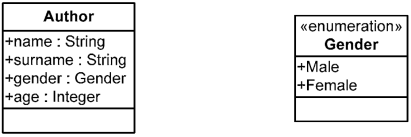
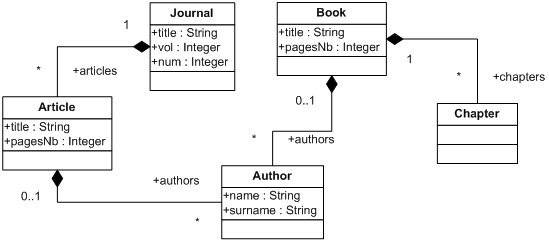

| Overview of the Atlas Transformation Language | ||
|---|---|---|
|
|
|
|
| Installation | The ATL Language | |
The ATL language offers ATL developers to design different kinds of ATL units. An ATL unit, whatever its type, is defined in its own distinct ATL file. ATL files are characterized by the .atl extension.
As an answer to the OMG MOF/ QVT RFP, ATL mainly focus on the model to model transformations. Such model operations can be specified by means of ATL modules. Besides modules, the ATL transformation language also enables developers to create model to primitive data type programs. These units are called ATL queries. The aim of a query is to compute a primitive value, such as a string or an integer, from source models. Finally, the ATL language also offers the possibility to develop independent ATL libraries that can be imported from the different types of ATL units, including libraries themselves. This provides a convenient way to factorize ATL code that is used in multiple ATL units. Note that the three ATL unit kinds same the share .atl extension.
These different ATL units are detailed in the following subsections. This section explains what each kind of unit should be used for, and provides an overview of the content of these different units.
This section provides two simple metamodels which will be used all along this guide to demonstrate ATL syntax and use.



An ATL module corresponds to a model to model transformation. This kind of ATL unit enables ATL developers to specify the way to produce a set of target models from a set of source models. Both source and target models of an ATL module must be "typed" by their respective metamodels. Moreover, an ATL module accepts a fixed number of models as input, and returns a fixed number of target models. As a consequence, an ATL module can not generate an unknown number of similar target models (e.g. models that conform to a same metamodel).
An ATL module defines a model to model transformation. It is composed of the following elements:
Helpers and rules do not belong to specific sections in an ATL transformation. They may be declared in any order with respect to certain conditions (see ATL Helpers section for further details). These four distinct element types are now detailed in the following subsections.
The header section defines the name of the transformation module and the name of the variables corresponding to the source and target models. It also encodes the execution mode of the module. The syntax for the header section is defined as follows:
module module_name; create output_models [from|refining] input_models;
The keyword module introduces the name of the module. Note that the name of the ATL file containing the code of the module has to correspond to the name of this module. For instance, a ModelA2ModelB transformation module has to be defined into the ModelA2ModelB.atl file. The target models declaration is introduced by the create keyword, whereas the source models are introduced either by the keyword from (in normal mode) or refining (in case of refining transformation). The declaration of a model, either a source input or a target one, must conform the scheme model_name : metamodel_name. It is possible to declare more than one input or output model by simply separating the declared models by a coma. Note that the name of the declared models will be used to identity them. As a consequence, each declared model name has to be unique within the set of declared models (both input and output ones). The following ATL source code represents the header of the Book2Publication.atl file, e.g. the ATL header for the transformation from the Book metamodel to the Publication metamodel:
module Book2Publication; create OUT : Publication from IN : Book;
The optional import section enables to declare which ATL libraries have to be imported. The declaration of an ATL library is achieved as follows:
uses extensionless_library_file_name;
For instance, to import the strings library, one would write:
uses strings;
Note that it is possible to declare several distinct libraries by using several successive uses instructions.
ATL helpers can be viewed as the ATL equivalent to Java methods. They make it possible to define factorized ATL code that can be called from different points of an ATL transformation. An ATL helper is defined by the following elements:
As an example, it is possible to consider a helper that returns the maximum of two integer values: the contextual integer and an additional integer value which is passed as parameter. The declaration of such a helper will look like (detail of the helper code is not interesting at this stage, please refer to ATL Helpers section for further details):
helper context Integer def : max(x : Integer) : Integer = ...;
It is also possible to declare a helper that accepts no parameter. This is, for instance, the case for a helper that just multiplies an integer value by two:
helper context Integer def : double() : Integer = self * 2;
In some cases, it may be interesting to be able to declare an ATL helper without any particular context. This is not possible in ATL since each helper must be associated with a given context. However, the ATL language allows ATL developers to declare helpers within a default context (which corresponds to the ATL module). This is achieved by simply omitting the context part of the helper definition. It is possible, by this mean, to provide a new version of the max helper defined above:
helper def : max(x1 : Integer, x2 : Integer) : Integer = ...;
Note that several helpers may have the same name in a single transformation. However, helpers with a same name must have distinct signatures to be distinguishable by the ATL engine (see ATL Helpers section for further details). The ATL language also makes it possible to define attributes. An attribute helper is a specific kind of helper that accepts no parameters, and that is defined either in the context of the ATL module or of a model element. In the remaining of the present document, the term attribute will be specifically used to refer to attribute helpers, whereas the generic term of helper will refer to a functional helper. Thus, the attribute version of the double helper defined above will be declared as follows:
helper context Integer def : double : Integer = self * 2;
Declaring a functional helper with no parameter or an attribute may appear to be equivalent. It is therefore equivalent from a functional point of view. However, there exists a significant difference between these two approaches when considering the execution semantics. Indeed, compared to the result of a functional helper which is calculated each time the helper is called, the return value of an ATL attribute is computed only once when the value is required for the first time. As a consequence, declaring an ATL attribute is more efficient than defining an ATL helper that will be executed as many times as it is called. Note that the ATL attributes that are defined in the context of the ATL module are initialized (during the initialization phase) in the order they have been declared in the ATL file. This implies that the order of declaration of this kind of attribute is of some importance: an attribute defined in the context of the ATL module has to be declared after the other ATL module attributes it depends on for its initialization. A wrong order in the declaration of the ATL module attributes will raise an error during the initialization phase of the ATL program execution.
In ATL, there exist three different kinds of rules that correspond to the two different programming modes provided by ATL (e.g. declarative and imperative programming): the matched rules (declarative programming), the lazy rules, and the called rules (imperative programming).
Matched rules. The matched rules constitute the core of an ATL declarative transformation since they make it possible to specify:
1) for which kinds of source elements target elements must be generated,
2) the way the generated target elements have to be initialized.
A matched rule is identified by its name. It matches a given type of source model element, and generates one or more kinds of target model elements. The rule specifies the way generated target model elements must be initialized from each matched source model element. A matched rule is introduced by the keyword rule. It is composed of two mandatory (the source and the target patterns) and two optional (the local variables and the imperative) sections. When defined, the local variable section is introduced by the keyword using. It enables to locally declare and initialize a number of local variables (that will only be visible in the scope of the current rule). The source pattern of a matched rule is defined after the keyword from. It enables to specify a model element variable that corresponds to the type of source elements the rule has to match. This type corresponds to an entity of a source metamodel of the transformation. This means that the rule will generate target elements for each source model element that conforms to this matching type. In many cases, the developer will be interested in matching only a subset of the source elements that conform to the matching type. This is simply achieved by specifying an optional condition (expressed as an ATL expression, see OCL Declarative Expressions section for further details) within the rule source pattern. By this mean, the rule will only generate target elements for the source model elements that both conform to the matching type and verify the specified condition.
The target pattern of a matched rule is introduced by the keyword to. It aims to specify the elements to be generated when the source pattern of the rule is matched, and how these generated elements are initialized. Thus, the target pattern of a matched rule specifies a distinct target pattern element for each target model element the rule has to generate when its source pattern is matched. A target pattern element corresponds to a model element variable declaration associated with its corresponding set of initialization bindings. This model element variable declaration has to correspond to an entity of the target metamodels of the transformation.
Finally, the optional imperative section, introduced by the keyword do, makes it possible to specify some imperative code that will be executed after the initialization of the target elements generated by the rule. As an example, consider the following simple ATL matched rule between two metamodels, MMAuthor and MMPerson:
rule Author {
from
a : MMAuthor!Author
to
p : MMPerson!Person (
name <- a.name,
surname <- a.surname
)
}
This rule, called Author, aims to transform Author source model elements (from the MMAuthor source model) to Person target model elements in the MMPerson target model. This rule only contains the mandatory source and target patterns. The source pattern defines no filter, which means that all Author classes of the source MMAuthor model will be matched by the rule. The rule target pattern contains a single simple target pattern element (called p). This target pattern element aims to allocate a Person class of the MMPerson target model for each source model element matched by the source pattern. The features of the generated model element are initialized with the corresponding features of the matched source model element. Note that a source model element of an ATL transformation should not be matched by more than one ATL matched rule. This implies the source pattern of matched rules to be designed carefully in order to respect this constraint. Moreover, an ATL matched rule can not generate ATL primitive type values.
Lazy rules.
TODO: write lazy rules documentation overview
Called rules. The called rules provide ATL developers with convenient imperative programming facilities. Called rules can be seen as a particular type of helpers: they have to be explicitly called to be executed and they can accept parameters. However, as opposed to helpers, called rules can generate target model elements as matched rules do. A called rule has to be called from an imperative code section, either from a match rule or another called rule.
As a matched rule, a called rule is introduced by the keyword rule. As matched rules, called rules may include an optional local variables section. However, since it does not have to match source model elements, a called rule does not include a source pattern. Moreover, its target pattern, which makes it possible to generate target model elements, is also optional. Note that, since the called rule does not match any source model element, the initialization of the target model elements that are generated by the target pattern has to be based on a combination of local variables, parameters and module attributes. The target pattern of a called rule is defined in the same way the target pattern of a matched rule is. It is also introduced by the keyword to. A called rule can also have an imperative section, which is similar to the ones that can be defined within matched rules. Note that this imperative code section is not mandatory: it is possible to specify a called rule that only contains either a target pattern section or an imperative code section. In order to illustrate the called rule structure, consider the following simple example:
rule NewPerson (na: String, s_na: String) {
to
p : MMPerson!Person (
name <- na
)
do {
p.surname <- s_na
}
}
This called rule, named NewPerson, aims to generate Person target model elements. The rule accepts two parameters that correspond to the name and the surname of the Person model element that will be created by the rule execution. The rule has both a target pattern (called p'') and an imperative code section. The target pattern allocates a Person class each time the rule is called, and initializes the ''name attribute of the allocated model element. The imperative code section is executed after the initialization of the allocated element (see Default mode execution semantics section for further details on execution semantics). In this example, the imperative code sets the surname attribute of the generated Person model element to the value of the parameter s_na.
The ATL execution engine defines two different execution modes for ATL modules. With the default execution mode, the ATL developer has to explicitly specify the way target model elements must be generated from source model elements. In this scope, the design of a transformation which aims to copy its source model with only a few modifications may prove to be very tiresome. Designing this transformation in default execution mode therefore requires the developer to specify the rules that will generate the modified model elements, but also all the rules that will only copy, without any modification, source to target model elements. The refining execution mode has been designed for this kind of situation: it enables ATL developers to only specify the modifications that have to be performed between the transformation source and target models. These two execution modes are described in the following subsections.
The normal execution mode is the ATL module default execution mode. It is associated with the keyword from in the module header. In default execution mode, the ATL developer has to specify, either by matched or called rules, the way to generate each of the expected target model elements. This execution mode suits to most ATL transformations where target models differ from the source ones.
The refining execution mode has been introduced to ease the programming of refining transformations between similar source and target models. With the refining mode, ATL developers can focus on the ATL code dedicated to the generation of modified target elements. Other model elements (e.g. those that remain unchanged between the source and the target model) are implicitly copied from the source to the target model by the ATL engine. The refining mode is associated with the keyword refining in the header of the ATL module. Granularity of the refining mode is defined at the model element level. This means that the developer will have to specify how to generate a model element as soon as the transformation modifies one of its features (either an attribute or a reference). On the other side, the developer is not required to specify the ATL code that corresponds to the copy of unchanged model elements. This feature may result in important saving of ATL code, which, in the end, makes the programming of refining ATL transformations simpler and easier. At current time, the refining mode can only be used to transform a single source model into a single target model. Both source and target models must conform to the same metamodel.
This section introduces the basics of the ATL execution semantics. Although designing ATL transformations does not require any particular knowledge on the ATL execution semantics, understanding the way an ATL transformation is processed by the ATL engine can prove to be helpful in certain cases (in particular, when debugging a transformation).
The semantics of the two available ATL execution modes, the normal and the refining modes, are introduced in the following subsections.
The execution of an ATL module is organized into three successive phases:
The module initialization step corresponds to the first phase of the execution of an ATL module. In this phase, the attributes defined in the context of the transformation module are initialized. Note that the initialization of these module attributes may make use of attributes that are defined in the context of source model elements. This implies these new attributes to be also initialized during the module initialization phase. If an entry point called rule has been defined in the scope of the ATL module, the code of this rule (including target model elements generation) is executed after the initialization of the ATL module attributes.
During the source model elements matching phase, the matching condition of the declared matched rules are tested with the model elements of the module source models. When the matching condition of a matched rule is fulfilled, the ATL engine allocates the set of target model elements that correspond to the target pattern elements declared in the rule. Note that, at this stage, the target model elements are simply allocated: they are initialized during the target model elements initialization phase.
The last phase of the execution of an ATL module corresponds to the initialization of the target model elements that have been generated during the previous step. At this stage, each allocated target model element is initialized by executing the code of the bindings that are associated with the target pattern element the element comes from. Note that this phase allows invocations of the resolveTemp() operation that is defined in the context of the ATL module. The imperative code section that can be specified in the scope of a matched rule is executed once the rule initialization step has completed. This imperative code can trigger the execution of some of the called rules that have been defined in the scope of the ATL module.
TODO: update with the current refining mode execution semantics
An ATL query consists in a model to primitive type value transformation. An ATL query can be viewed as an operation that computes a primitive value from a set of source models. The most common use of ATL queries is the generation of a textual output (encoded into a string value) from a set of source models. However, ATL queries are not limited to the computation of string values and can also return a numerical or a boolean value.
The following subsections respectively describe the structure and the execution semantics of an ATL query.
After an optional import section, an ATL query must define a query instantiation. A query instantiation is introduced by the keyword query and specifies the way its result must be computed by means of an ATL expression:
query query_name = exp;
Beside the query instantiation, an ATL query may include a number of helper or attribute definitions. Note that, although an ATL query is not strictly a module, it defines its own kind of default module context. It is therefore possible, for ATL developers, to declare helpers and attributes defined in the context of the module in the scope of an ATL query.
As an ATL module, the execution of an ATL query is organized in several successive phases. The first phase is the initialization phase. It corresponds to the initialization phase of the ATL modules and is dedicated to the initialization of the attributes that are defined in the context of the ATL module.
The second phase of the execution of an ATL query is the computation phase. During this phase, the return value of the query is calculated by executing the declarative code of the query element of the ATL query. Note that the helpers that have been defined within the query file can be called at both the initialization and the computation phases.
The last type of ATL unit is the ATL library. Developing an ATL library enables to define a set of ATL helpers that can be called from different ATL units (modules, but also queries and libraries).
As the other kinds of ATL units, an ATL library can include an optional import section. Besides this import section, an ATL library defines a number of ATL helpers that will be made available in the ATL units that will import the library.
Compared to an ATL module, there exists no default module element for ATL libraries. As a consequence, it is impossible, in libraries, to declare helpers that are defined in the default context of the module. This means that all the helpers defined within an ATL library must be explicitly associated with a given context.
Compared to both modules and queries, an ATL library cannot be executed independently. This currently means that a library is not associated with any initialization step at execution time (as described in Module execution semantics). Due to this lack of initialization step, attribute helpers cannot be defined within an ATL library.
|
|

|
|
| Installation | The ATL Language |